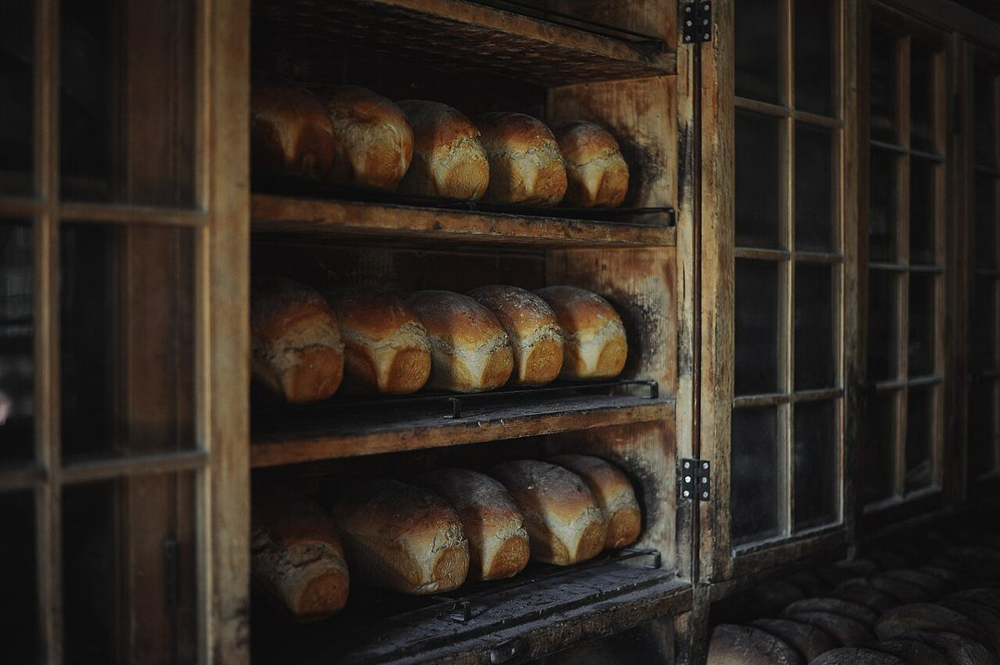
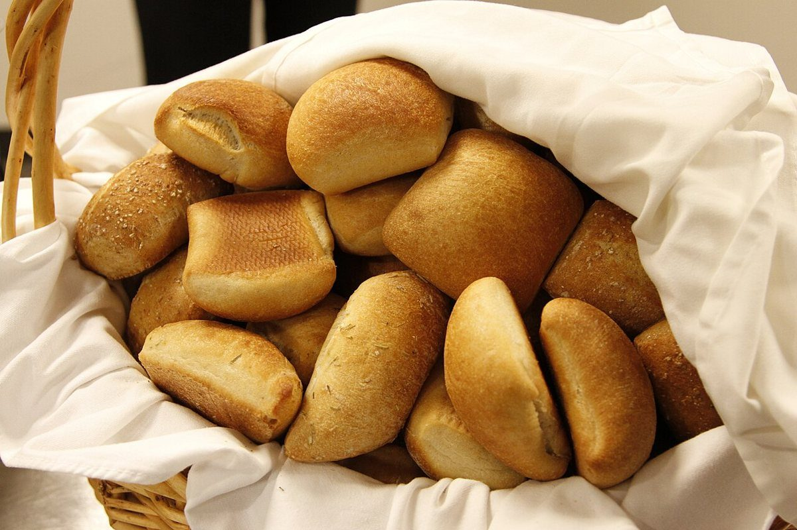
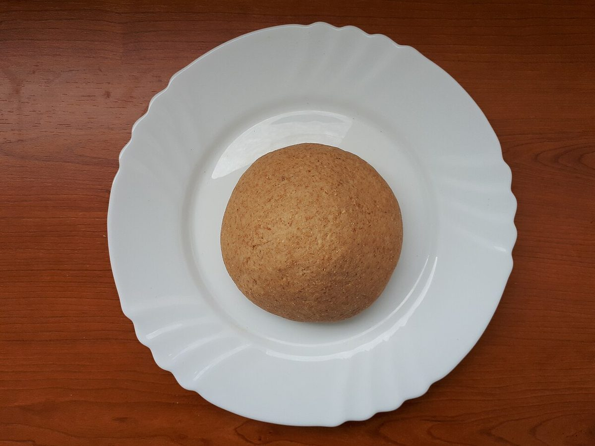
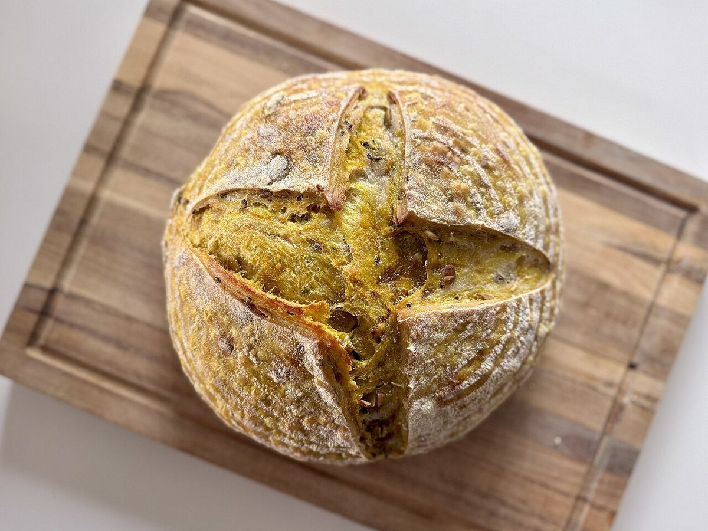

店のこと
確認できたことだけ
現在確認できているのは、所在地とInstagramのみです。それ以外は準備中です。
ご案内
基本のこと
| 所在地 | 〒789-1911 高知県幡多郡黒潮町浮鞭2078-3 |
|---|---|
| 電話 | 準備中 |
| 営業時間 | 準備中 |
| 定休日 | 準備中 |
| ご予約 | 準備中 |
| 駐車場 | 準備中 |
| SNS | Instagram @earlybird_the_bread_stand |
ギャラリー(イメージ)
棚とかごのパン


写真はパンやコーヒー豆のイメージです。お店のものではなく、お店で提供している商品を示すものでもありません。
制作側の連想
なぜピザカッターなのか
お店の屋号やパンから連想した、制作側のテーマです。刃・ガード・軸・握りと、六つの部品に分けやすい道具だったので選びました。お店の理念・由来とは無関係です。実際の製品の仕様を示すものでもありません。
- 1握り(ハンドル)手で持って、押し進めるための太い持ち手。
- 2回転刃(ホイール)円盤状で、回転しながら生地を切り分ける刃。
- 3刃ガード刃の上を覆い、指が刃に近づきすぎないようにする板。
- 4軸ピン刃の中心を留めて、くるくる回せるようにする小さな芯。
- 5保護カバー使わないときに刃の外周を覆っておくためのカバー。
- 6吊り下げ穴握りの端にあけた穴。フックに掛けて保管するための穴。
ギャラリー(イメージ)
生地とパンの写真



写真はパンやコーヒー豆のイメージです。お店のものではなく、お店で提供している商品を示すものでもありません。
ギャラリー(イメージ)
断面のパン